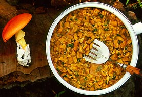
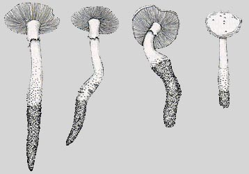
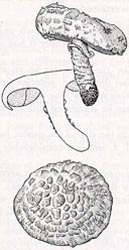
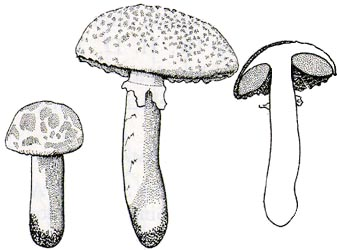

|
 Amanita Studies Site News as of 26 Oct. 2009 |
|
|
What is the site news page? On this page we communicate our changes to the Amanita Studies site. A visitor familiar with the site can quickly ascertain what has changed since his/her last visit by viewing this page. Items will be added at the top of this page and, after one year in most cases, deleted from the bottom of the page.
|
PLEASE!
DON'T BE SATISFIED WITH A SITE THAT ISN'T WORKING PROPERLY. |
We will strive to cover (in brief) nomenclatorial changes and descriptions of new taxa on this page and to provide references in this site's bibliography(ies).
  
26.x.2009: All species pages have been revised to the new standard format.
: There are still a half dozen or so errors that have not been corrected in the sect. Caesareae PDF document.
We will get to this problem as soon as we can.
19-25.x.2009: Species pages updated: Amanita breckonii, A. dulciarii,
A. franchetii, A. fulva,
A. kwangsiensis, A. loosii, A. polypyramis, A. populiphila, A. virgineoides and A. virosa.
New technical description added: Amanita sororcula. The visual key to
the sections of Amanita has been updated to include sect. Caesareae The editors are very pleased to be able to use
photographs of N. K. Zeng of Hainan Prov., China; X. H. Wang of Yunnan Prov., China; and Christophe Robin, France.
All species having epithets beginning with "a" through "x" have been revised to the new standard format.
13.x.2009: All species having epithets beginning with "a" through "o" have been revised to the new
standard format. We will break for the 2009 NEMF in Cape Cod on 15 October 2009.
1-11.x.2009: A large set of illustrations of Australian species of Amanita have been received from
Dr. Elaine Davison and Katrina Symes. We are very grateful to both of them. These illustrations will soon begin to
appear on relevant species pages.
Species updated: Amanita ananaeceps, A. austroviridis, A. eucalypti, A. ochroterrea,
A. thiersii, and A. vestita. All species having epithets beginning with "c" through "n" have been revised to the new standard format.
Species added: Amanita arenicola O. K. Mill. & D. J. Lodge.
Species page added: Amanita dulciarii Tulloss nom. prov.
27-29.ix.2009: Species updated: Amanita caesarea, A. caesareoides,
A. calyptroderma, A. ochroterrea, A. populiphila, and all species having epithets beginning with "a" through "b." Change
of provisional name: The epithet "albosorora" is replaced by "cremeosorora."
A recent review of this site in Fungi stated that it was poorly designed logically. I think that our inability to rapidly convert all our web pages to
our new format (with many additional relevant links on each species page) may be one cause of this criticism. Therefore, we are going to make
every effort to bring all of our species pages to a common format.
Remember that you can access a species using pictures in regional checklists. When you know the spelling of a species name,
you can find the occurrences of that name using the search function on our home page. When you know the section in which the species
belongs, you can use the sectional lists that are accessible from our home page. For our users who are uncertain about the definitions of
the sections of Amanita, we will be adding a document to this site that will explain determination of specimens to section without use
of a microscope. It is easier for some material than others, of course. The advantage of making sectional divisions part of the lingo of parataxonomists
interested in the present genus seems something that is very worthwhile doing...at the very least because the number of amanitologists in the world
is very, very small.
17.vii.2009: Species updated: Amanita basii.
21-30.v.2009: Species updated: Amanita armeniaca, A. citrina var. grisea,
A. floridana, A. nigrescens, and A. taiepa.
The world key for Caesareae has been updated by the addition of an inadvertently omitted species -- A. tuza. A collaboration
to initiate work on a world key for approximately 110 species of sect. Amanita has been begun. It is hoped that a draft can be on-line
before the end of 2009.
9.v.2009: Species updated: Amanita ristichii and A. salmonescens.
2.v.2009: Species updated: Amanita pantherina.
18-24.iv.2009: Species updated: Amanita luteofusca, A. pantherina var. pantherinoides,
A. smithiana, and A. subrecutita.
11.iv.2009: Species updated: Amanita brunneolocularis.
Species added: Amanita farinosa sensu Thiers added to sect. Amanita.
29-30.iii.2009: Species updated: Amanita novinupta, A. protecta, and
A. velosa. We've completed the updating of format and the correcting of typos and other
errors in all species of sect. Caesareae having epithets with initials "J" through "Z" inclusive.
15-23.iii.2009: Species updated: Amanita brunneiphylla, A. foetens,
A. lutescens, A. microlepis, A. mumura, A. ochroterrea, A. pareparina, A. pelioma,
A. praelongispora, A. pyramidiferina, and A. thiersii.
We've completed the updating of format and the correcting of typos and other errors in all species of sect. Lepidella having epithets
with initials "A" through "Z" inclusive. We've completed the updating of format and the correcting of typos and other
errors in all species of sect. Caesareae having epithets with initials "M" through "Z" inclusive.
2-10.iii.2009: Species updated: Amanita bresadolana, A. cylindrispora,
A. crassa, A. daucipes, A. elongatispora, A. eriophora, A. gracilienta, A. hiltonii,
Amanita muscaria subsp. flavivolvata, A. muscaria var. muscaria.
Species added: Amanita hayalyuy (recently described from the state of Chiapas, Mexico),
Amanita viscidolutea recently described from Brazil. We've completed the updating of format and the
correcting of typos and other errors in all species of sect. Lepidella having epithets with initials "A" through "H"
inclusive.
19-28.ii.2009: Updated species: Amanita alliacea, A. allostraminea,
A. ameghinoi, A. ananaecipitoides, A. angustispora, A. atkinsoniana, A. basibulbosa,
A. boudieri var. beillei, A. brunneiphylla, A. canescens, A. chlorinosma, A. cinereoconia, A. cinereopannosa,
A. diemii, A. gymnopus, and A. miculifera. Technical description added for A. miculifera.
4.ii.2009: Ten broken links were located on the Amanta Studies site. These have been re-established.
Updated species: Amanita crassiconus, A. flavoconia, A. subnudipes, & A. subvaginata.
20-27.i.2009: Updated species: Amanita morrisii, A. nothofagi,
A. novinupta, and A. rubescens. To avoid writing all the species names, today we've completed the updating of format and
correcting of typos and other errors in all species of sect. Validae having epithets with initials "A" through "Z"
inclusive. Inauguration of 44th U.S. president, Barak Hussein Obama, occurred on 20 January 2009.
7-19.i.2009: Updated species: Amanita constricta, A. farinacea, A. flavipes,
A. nehuta, A. orsonii, A. pakistanica, A. pekeoides,
A. subvaginata, and A. wellsii. "Technical detail" PDFs have been added for A. constricta, A. flavipes, A. orsonii,
A. pakistanica, and A. pekeoides. Illustrations have yet to be added to the PDFs that support the last four species.
7.xi.2008: Updated species: Amanita nivalis.
20.ix.2008: Updated species: Amanita hongoi,
A. kotohiraensis, and A. miculifera.
15-27.viii.2008: Added species: Amanita cruzii
and A. occidentalis.
Updated species: Amanita calyptroderma, A. olivaceogrisea,
A. pantherina var. pantherinoides, A. roseitincta, and A. umbrinidisca.
Provisional names: At the 2008 MSA meeting at Penn State Univ.,
Dr. Paul Carroll mentioned to RET the need for posting useful provisional names with some sort of usable definition
even if they cannot yet be published for some reason. At the same Conference Dr. Tom Bruns mentioned in a
presentation that with a flood of sequences expected to be generated from new diversity sampling protocols and
highly automated new sequencing equipment, the need for taxonomists is even greater than was previously
appreciated. Providing names to go with sequences will be more and more critical in the view of
several of the conference's speakers.
We have hesitated in placing provisional names on the site in
the past, but had to respond to other sites who began to use provisional names of one or the other of our editors.
Perhaps, now is the time to admit that some "numbered" taxa actually have a proposed name that has been
floated here or there in public (although we have often hidden that name behind its "number").
Starting in the next weeks, we will begin to add those provisional names that we believe have sufficient
taxonomic support to be published and survive as "good names" in the future. The first step, as for any name
in the lists on this site, will be to have the provisional names appear in sectional lists. Until a text is
repaired for such a name we can provide a link to whatever information there may be in one of the checklists
(if any) in which at least some useful, ID-supporting information is available.
The first set of provisional names to be added are proposed to belong to subgenus Amanita and
will be provided HERE as they appear in sectional lists:
HISTORIC ITEMS
25-27 July 2006: Added
taxa: Amanita cinnamomescens and A. cokeriana.
Deleted taxon: Amanita decipiens. New pages:
Amanita cinnamomescens, A. javanica, and A. virosa (our
500th species page for the Amanita Studies site). Updated
pages: Amanita bisporigera, A. daucipes, A. exitialis, A.
flavorubens, A. gracilior, A. morrisii, A. novinupta, A. orsonii, A.
rubescens, A. rubescens var. alba, A. rubescens var.
congolensis, A. subjunquillea, and A. verna.
May 2006:
WELCOME BACK to Lindsay Possiel! Lindsay is working with us for
the third straight summer doing the great job she always does! We are now well past the major milestone of 400 species covered at levels 1
or 2.
13-20 July 2005: Hats off to Lindsay Possiel, who is working with
RET again this summer. Thanks to Lindsay's hard work, we have passed the major milestone of 300
pages dedicated to individual taxa of Amanita.
[ Return to
Amanita Home Page ]
Last change: 26 October 2009.
This page is maintained by R. E. Tulloss.
Development support for this site provided by Lindsay Possiel during summers of 2004, 2005, and 2006.